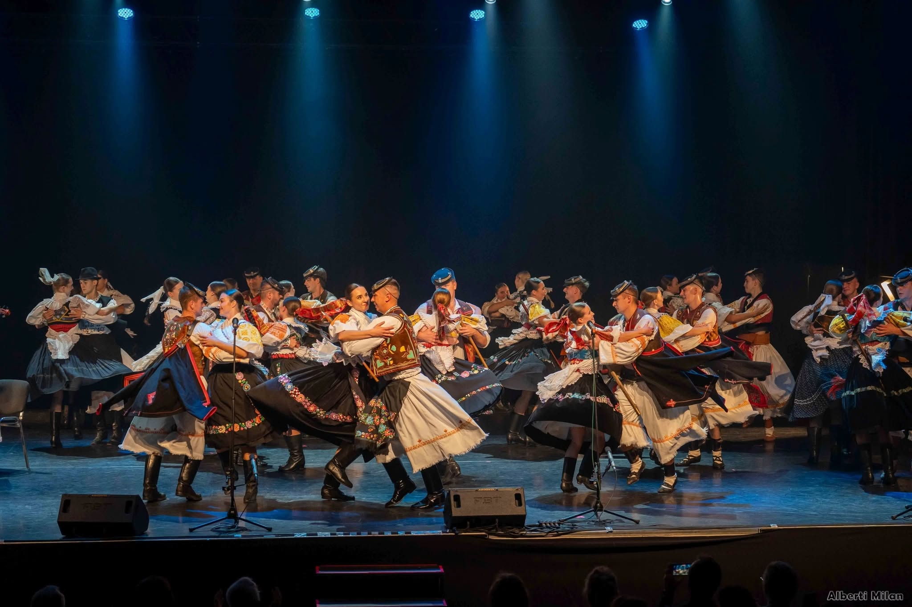

Najbližšie · vlastná tradícia
Folklórne vystúpenia
Ponuka tanečných, speváckych a hudobných vystúpení na kultúrne a spoločenské podujatia.
Kontaktovať násČo vám radi prinášame
Ponúkame tanečné, spevácke a hudobné vystúpenia, tradičné čepčenie a živú ľudovú hudbu.
Naša ponuka

Najbližšie · vlastná tradícia
Ponuka tanečných, speváckych a hudobných vystúpení na kultúrne a spoločenské podujatia.
Kontaktovať nás
Svadobné tradície
Tradičný svadobný obrad sprevádzaný folklórnym pásmom, tancom a spevom.
Kontaktovať nás
Živá hudba pre radostnú udalosť
Živá ľudová hudba vhodná na svadby, oslavy a kultúrne podujatia.
Kontaktovať násMáš záujem?
Navrhneme vhodný obsah pre vaše podujatie.
Napíšte nám →